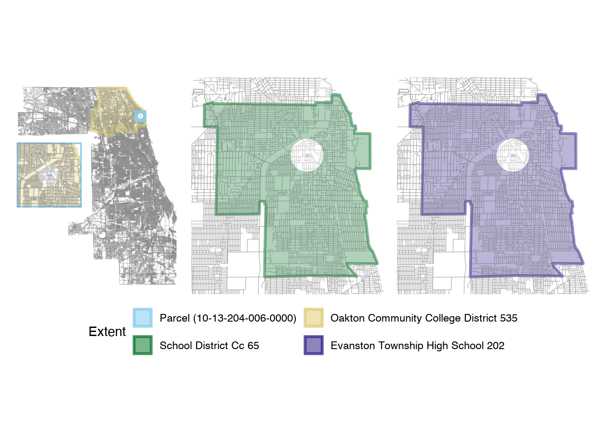
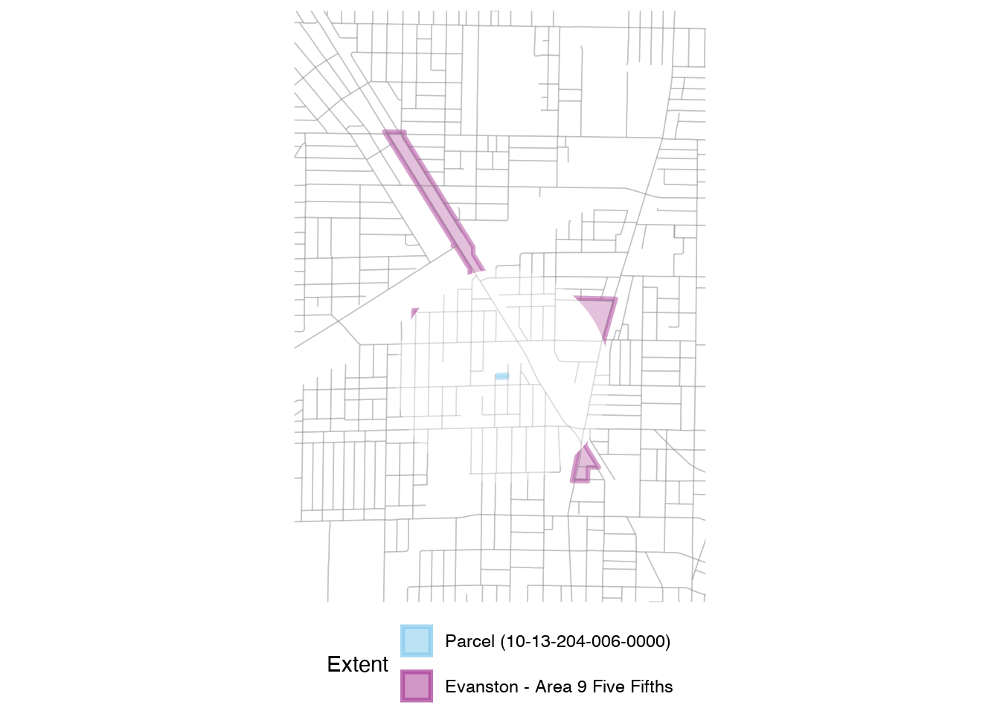
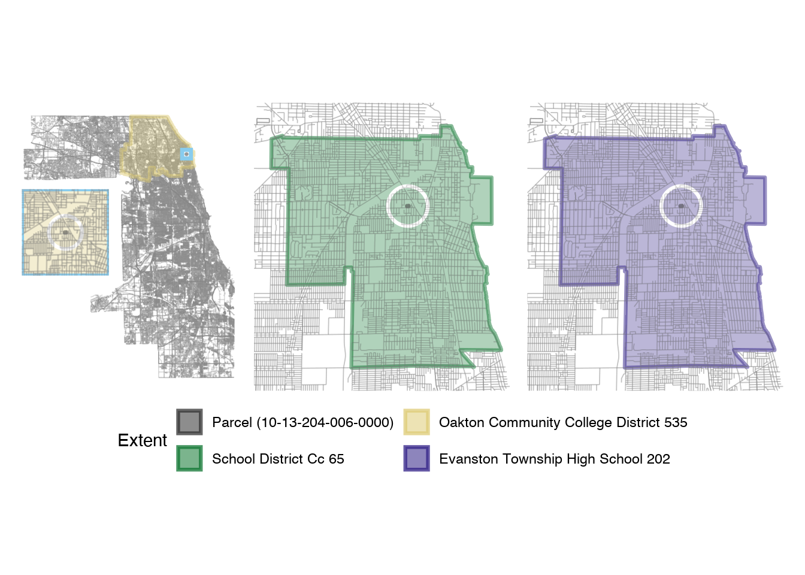
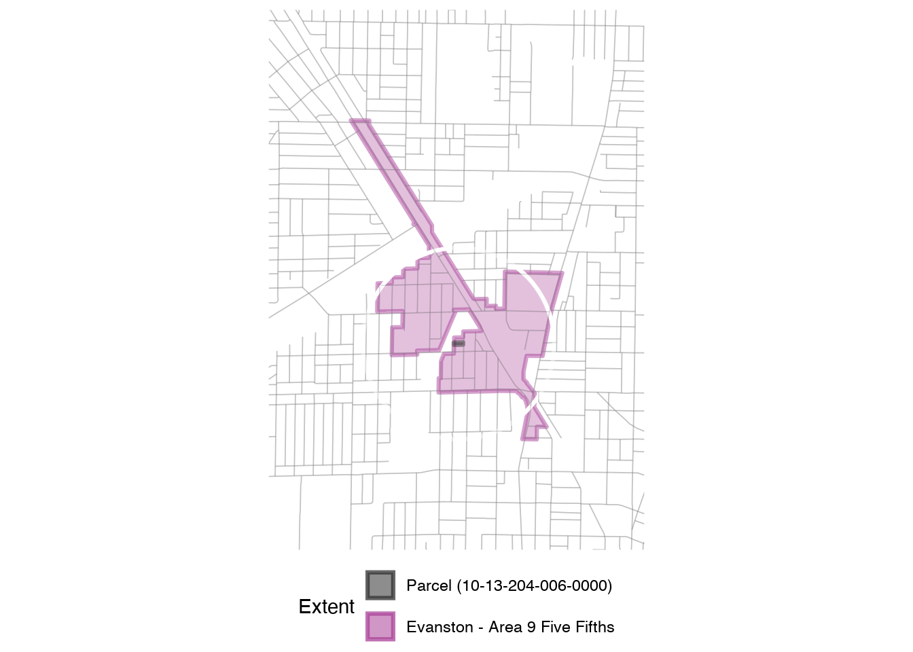
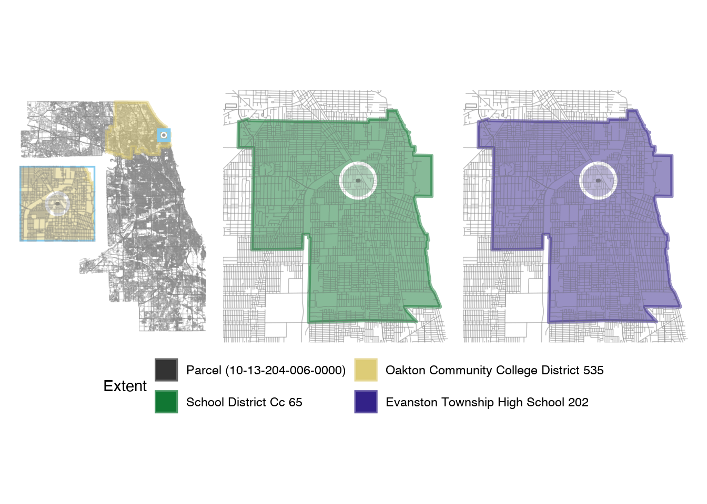
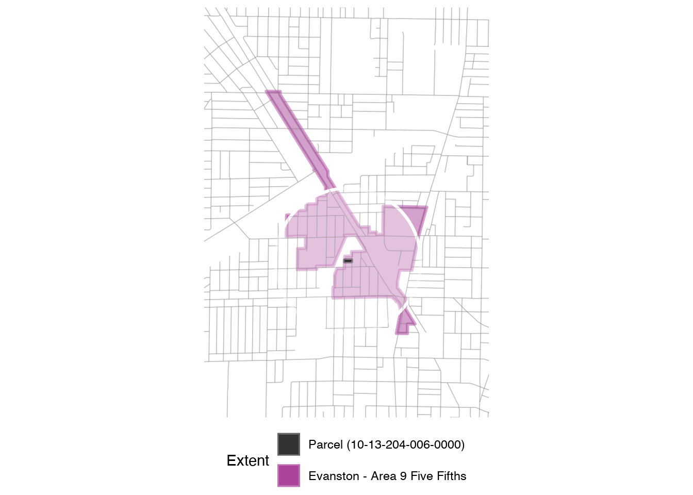
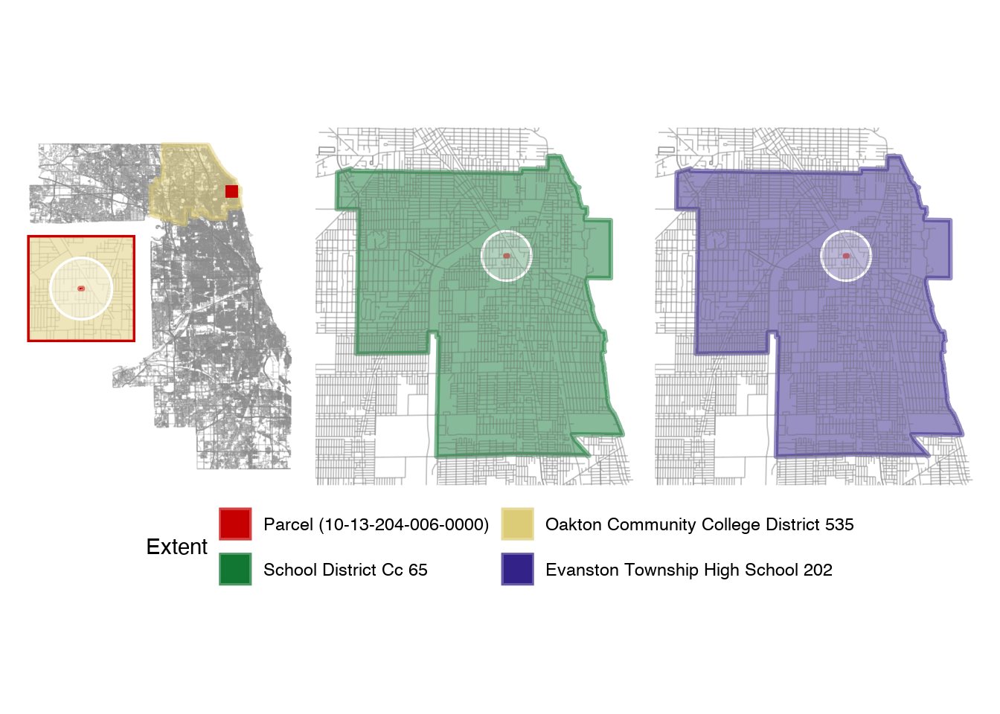
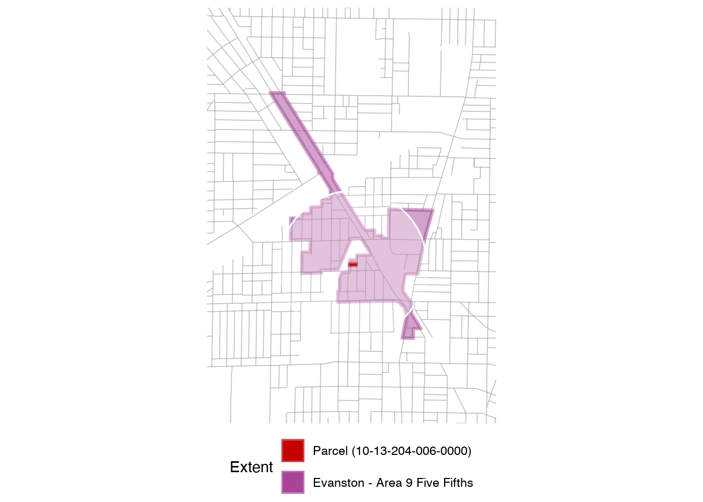

Map Options
Option 1
- If area > 2.5e8 m^2, inset
- No inset
- roads + bnd shape + pin shape buffer + pin shape
- Inset
- Main : roads + bnd shape + pin shape buffer + pin shape + outline
- Inset: Main + roads + (zoomin)
Schools

TIF

Option 2
- Change colors from Option 1
- pin shape - black
- pin shape buffer - no fill; color white
Schools

TIF

Option 3
- Change colors from Option 1
- pin shape - black
- pin shape buffer - fill alpha 0.35; color white
- bnd shape - fill alpha 0.5
Schools

TIF

Option 4
- Change colors from Option 1
- pin shape - red
- pin shape buffer - fill alpha 0.35; color white
- bnd shape - fill alpha 0.5
- Inset zoom extra
Schools

TIF
